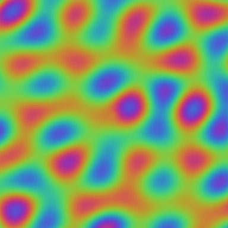

…or drop your own image
← All models · AI-image detector
use case · wild
Detectors like this key off subtle texture statistics — exactly the things a screenshot, a re-save, or a bit of noise disturbs. Pick an image, apply an everyday edit, and watch the AI-generated score move, sometimes a lot, with the picture looking the same to you. This is the single best argument for treating the number as a hint, not a verdict.
